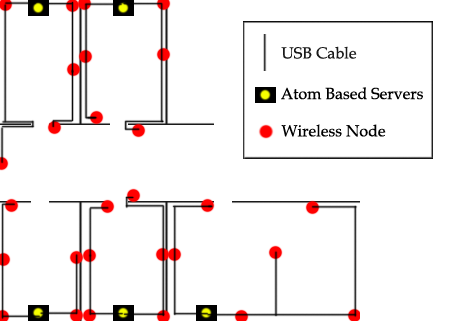

Our current fixed testbed consists of nodes which are connected using USB cables to Atom Based Servers. This configuration provides us with the ability to massively and quickly flash nodes on the network using the USB connections as well as gather data and reports from all the nodes without using the wireless medium. This way, we can preserve the wireless medium for algorithms testing and for algorithms messages only. Our nodes are raised from the ground to avoid signal reflections as much as possible.
The map of the current fixed deployment in the TCS Lab is the following:
(French Version)
(English Version)